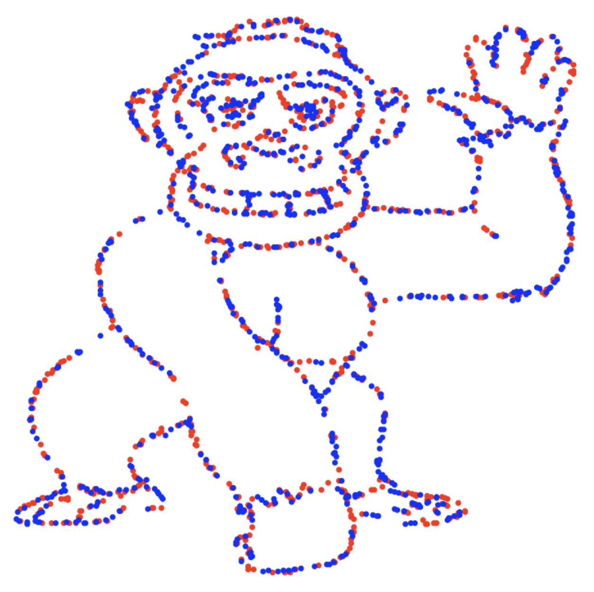
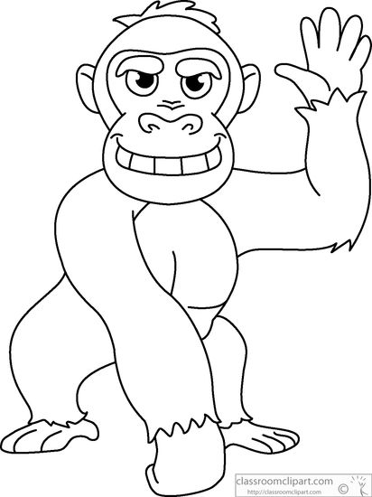
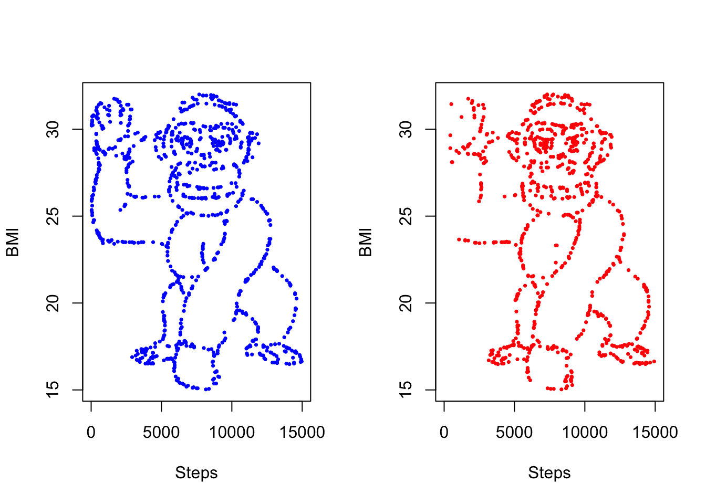

download.file(
paste0(
"https://classroomclipart.com/images/gallery/",
"Clipart/Black_and_White_Clipart/Animals/",
"gorilla-waving-cartoon-black-white-outline-clipart-914.jpg"
),
tempfile(fileext = ".jpg")
)
tl;dr
You can convert a line drawing to datapoints with a sprinkle of {magick}.
Ape escape
Have you seen that video where you’re so focused on counting basketball passes that you fail to see the gorilla moving across the screen?
This kind of selective attention was studied by two researchers, Yanai and Lercher, who provided subjects with a dataset that looked like a gorilla when plotted. The gorilla was found less often if the subjects were also given a hypothesis to investigate.
The study got some attention on Twitter last week. As a result, Isabella Velásquez wrote a great blogpost where she recreated the dataset using R and Python in tandem via the {reticulate} package.
I had a go at creating the dataset with base R and the excellent {magick} package for image manipulation.
Point it out
The jpeg image file used in the original paper can be downloaded from classroomclipart.com to a temporary location on your machine.
We can read the file into R with {magick}.
img <-
list.files(tempdir(), pattern = ".jpg$", full.names = TRUE) |>
magick::image_read()
img
With other {magick} functions we can:
- reduce to two distinct colours only (i.e. for the lines and background), which makes it easier to filter the data later
- convert from an image to point data
go <- img |>
magick::image_quantize(2) |> # colour reduction
magick::image_raster() |> # as x-y data
as.data.frame()
head(go) x y col
1 1 1 #fefefeff
2 2 1 #fefefeff
3 3 1 #fefefeff
4 4 1 #fefefeff
5 5 1 #fefefeff
6 6 1 #fefefeffAnd to prove we only have two colours (off-white for the background, grey for the lines):
unique(go$col)[1] "#fefefeff" "#555555ff"Now we can:
- reverse the order of the
yvalues so the gorilla is right-side up - filter to retain only the datapoints that represent lines
- rescale the
xandyto create ‘Body Mass Index’ (BMI)1 and ‘steps’ variables
go$y <- rev(go$y)
go <- go[go$col != "#fefefeff", ]
go$bmi <- go$y / max(go$y) * 17 + 15
go$steps <- 15000 - go$x * 15000 / max(go$x)
head(go) x y col bmi steps
174 174 550 #555555ff 32 8665.049
175 175 550 #555555ff 32 8628.641
176 176 550 #555555ff 32 8592.233
196 196 550 #555555ff 32 7864.078
198 198 550 #555555ff 32 7791.262
199 199 550 #555555ff 32 7754.854You may have noticed that the image has a watermark. We could have removed it earlier with {magick}, but can do it now by filtering out the datapoints in that corner.
go$logo <- ifelse(go$bmi < 16 & go$steps < 5500, TRUE, FALSE)
go <- go[!go$logo, ]This leaves us with 16865 datapoints. We can follow the original study by taking a sample and splitting the results into ‘female’ and ‘male’ groups, weighted so that the female group has higher step counts.
go_smp <- go[sample(nrow(go), 1768), ]
go_smp$rnorm <- rnorm(nrow(go_smp), mean = 0, sd = 10)
go_smp$index <- go_smp$steps * (1 + go_smp$rnorm)
go_smp$group <-
ifelse(go_smp$index < median(go_smp$steps), "F", "M") |>
as.factor()
head(go_smp[, c("bmi", "steps", "group")]) bmi steps group
135597 21.83091 13216.01942 F
85694 25.60182 72.81553 F
199825 17.00909 14817.96117 F
43530 28.75455 5169.90291 M
200308 16.97818 12233.00971 F
55403 27.85818 7900.48544 FNow finally to plot the datasets side-by-side.
par(mfrow = c(1, 2))
with(
go_smp[go_smp$group == "F", ],
plot(
steps, bmi,
xlim = c(0, 15000),
pch = 16, cex = 0.5, col = "blue",
xlab = "Steps", ylab = "BMI",
)
)
with(
go_smp[go_smp$group == "M", ],
plot(
steps, bmi,
xlim = c(0, 15000),
pch = 16, cex = 0.5, col = "red",
xlab = "Steps", ylab = "BMI"
)
)
I see them!
This has been a bit overengineered and could be generalised, but it gives a gist of how you might go about converting an image to a dataframe of x and y positions.
At worst, this is a reminder not to trust researchers and to always check for unexpected gorillas.
Environment
Session info
Last rendered: 2023-07-07 21:11:24 BSTR version 4.3.1 (2023-06-16)
Platform: aarch64-apple-darwin20 (64-bit)
Running under: macOS Ventura 13.2.1
Matrix products: default
BLAS: /Library/Frameworks/R.framework/Versions/4.3-arm64/Resources/lib/libRblas.0.dylib
LAPACK: /Library/Frameworks/R.framework/Versions/4.3-arm64/Resources/lib/libRlapack.dylib; LAPACK version 3.11.0
locale:
[1] en_US.UTF-8/en_US.UTF-8/en_US.UTF-8/C/en_US.UTF-8/en_US.UTF-8
time zone: Europe/London
tzcode source: internal
attached base packages:
[1] stats graphics grDevices utils datasets methods base
loaded via a namespace (and not attached):
[1] digest_0.6.31 fastmap_1.1.1 xfun_0.39 magrittr_2.0.3
[5] knitr_1.43.1 htmltools_0.5.5 png_0.1-8 rmarkdown_2.23
[9] cli_3.6.1 compiler_4.3.1 rstudioapi_0.14 tools_4.3.1
[13] evaluate_0.21 Rcpp_1.0.10 yaml_2.3.7 magick_2.7.4
[17] rlang_1.1.1 jsonlite_1.8.7 htmlwidgets_1.6.2Reuse
CC BY-NC-SA 4.0